01ಇತಿಹಾಸ
ಹಿಂದಿನ ಹೆಜ್ಜೆಗಳನ್ನು ಹುಡುಕುತ್ತಾ
ಶಾಸನಗಳು, ಗೆಜೆಟಿಯರ್ಗಳು ಮತ್ತು ದಾಖಲೆಗಳ ಮೂಲಕ ನಮ್ಮ ಊರಿನ ಹಿಂದಿನ ದಿನಗಳ ಪರಿಚಯ.
ಮುಂದೆ ಓದಿ →ನರಗುಂದ ತಾಲೂಕು · ಗದಗ ಜಿಲ್ಲೆ · ಕರ್ನಾಟಕ
ಸಂಕದಾಳದ ಇತಿಹಾಸ, ನೆನಪುಗಳು ಮತ್ತು ಜನಜೀವನವನ್ನು ಒಟ್ಟಿಗೆ ಉಳಿಸುವ ಒಂದು ಪುಟ್ಟ ಜಾಗ.
ಬರಹಗಳನ್ನು ಓದಿಊರಿನ ದಿನಚರಿ
ಶಾಸನಗಳು, ಗೆಜೆಟಿಯರ್ಗಳು ಮತ್ತು ದಾಖಲೆಗಳ ಮೂಲಕ ನಮ್ಮ ಊರಿನ ಹಿಂದಿನ ದಿನಗಳ ಪರಿಚಯ.
ಮುಂದೆ ಓದಿ →1951ರಿಂದ 2011ರವರೆಗಿನ ಜನಗಣತಿ ದಾಖಲೆಗಳು ಊರಿನ ಬದಲಾವಣೆಯ ಕಥೆಯನ್ನು ಹೇಳುತ್ತವೆ.
ಮುಂದೆ ಓದಿ →ಮಠ, ಜಾತ್ರೆ ಮತ್ತು ವರದಿಯಲ್ಲಿ ದಾಖಲಾದ ಸ್ಥಳೀಯ ಸುದ್ದಿಗಳು.
ಮುಂದೆ ಓದಿ →ನಮ್ಮ ಬೇರುಗಳು
ಕರ್ನಾಟಕದ ಗದಗ ಜಿಲ್ಲೆಯ ನರಗುಂದ ತಾಲೂಕಿನಲ್ಲಿರುವ ಸಂಕದಾಳ ನಮ್ಮ ಊರು. ಈ ಬ್ಲಾಗ್ ಊರಿನ ಇತಿಹಾಸ ಮತ್ತು ಜನರ ನೆನಪುಗಳನ್ನು ಕನ್ನಡ ಹಾಗೂ ಇಂಗ್ಲಿಷ್ನಲ್ಲಿ ಹಂಚಿಕೊಳ್ಳುವ ಪ್ರಯತ್ನ.
ಆರಂಭಿಕ ವಿಷಯಕ್ಕೆ ಆಧಾರ: ನೀವು ಹಂಚಿಕೊಂಡ “Sankadal Village History Census Kannada” ವರದಿ. ಇತಿಹಾಸದ ಅಂದಾಜುಗಳನ್ನು ಖಚಿತ ಸಂಗತಿಗಳಿಂದ ಪ್ರತ್ಯೇಕವಾಗಿ ಸೂಚಿಸಲಾಗಿದೆ.
ವರದಿ · ಪುಟ 1
ಸುಮಾರು 1547ರ ವಿಜಯನಗರ ಶಾಸನದಿಂದ 2026ರವರೆಗಿನ ಇತಿಹಾಸ, ಗೆಜೆಟಿಯರ್ ಮತ್ತು 1951–2011ರ ಜನಗಣತಿ ದಾಖಲೆಗಳು. ಈ ವೆಬ್ ಆವೃತ್ತಿಯು ಹಂಚಿಕೊಂಡ ಕನ್ನಡ ವರದಿಯ ವಿವರಗಳನ್ನು ವಿಷಯವಾರು ನೀಡುತ್ತದೆ. ಮೂಲ ದಾಖಲೆಗಳನ್ನು ಈ ವೆಬ್ಸೈಟ್ ಸ್ವತಂತ್ರವಾಗಿ ಪರಿಶೀಲಿಸಿಲ್ಲ.
ವರದಿಯು ಹಿಂದಿನ ಎರಡು ಇಂಗ್ಲಿಷ್ ವರದಿಗಳಾದ “Village Profile” ಮತ್ತು “Census Records and Historical Evidence”ಗಳನ್ನು ಒಗ್ಗೂಡಿಸಿ ಕನ್ನಡಕ್ಕೆ ಅನುವಾದಿಸಿದೆ. ಪರಿಶೀಲಿಸಿದ ಮೂಲಗಳಲ್ಲಿ 1951, 1961, 1971, 1981, 2001 ಮತ್ತು 2011ರ ಜನಗಣತಿ ಕೈಪಿಡಿಗಳು; 1884 ಮತ್ತು 1959ರ ಧಾರವಾಡ ಗೆಜೆಟಿಯರ್ಗಳು; ARIE 1933–34; SII XI, XV, XVIII, XX; Bombay-Karnatak Inscriptions (1940); ASI ಭಾರತಶ್ರೀ ಪಡಿಯಚ್ಚು ಸಂಗ್ರಹ ಮತ್ತು ಕನ್ನಡ ಪತ್ರಿಕಾ ವರದಿಗಳು ಸೇರಿವೆ.
ಮುಖ್ಯಾಂಶಗಳು: ಜನಸಂಖ್ಯೆ 661ರಿಂದ 1,831ಕ್ಕೆ; ಕುಟುಂಬಗಳು 127ರಿಂದ 337ಕ್ಕೆ; ಮಹಿಳಾ ಸಾಕ್ಷರರು 4ರಿಂದ 405ಕ್ಕೆ (1951–2011). 1971ರಲ್ಲಿ ನೀರಾವರಿ ಇಲ್ಲ; 1981ರಲ್ಲಿ ಸುಮಾರು 350 ಹೆಕ್ಟೇರ್ ಸರ್ಕಾರಿ ಕಾಲುವೆ ನೀರಾವರಿ. ವರದಿಯ ಪ್ರಕಾರ ಗ್ರಾಮ ವಿಸ್ತೀರ್ಣ ಸುಮಾರು 1,156 ಹೆಕ್ಟೇರ್ ಆಗಿಯೇ ಉಳಿದಿದೆ.
ವರದಿ · ಪುಟ 2
ಹುಡುಕಿದ ಹೆಸರಿನ ರೂಪಗಳು: Sankhadal, Sankhadala, Sankdhal, Sankadhal, Sankadhala, Sankadal, Sankdal, Sankadala, ಸಂಕದಾಳ, ಸಂಕದಲ್. ವರದಿಯ ಪ್ರಕಾರ ಇವು ಒಂದೇ ಊರಿನ ಕಾಗುಣಿತ ಅಥವಾ ಲಿಪ್ಯಂತರ ರೂಪಗಳು; ಬೇರೆ ಸ್ಥಳಗಳಲ್ಲ.
| ವರ್ಷ | ಹೆಸರು / ಸಂಕೇತ | ಮೂಲ |
|---|---|---|
| ಸು.1547 / ದಾಖಲು 1933–34 | Sankhadala; Sankhadal | ARIE 1933–34; SII XVIII 288 |
| 1951 | Sankadal | DCHB 1951 |
| 1959 | Sankadhala | ಧಾರವಾಡ ಗೆಜೆಟಿಯರ್ |
| 1961 | Sankadal | DCHB 1961 |
| 1971; 1981 | Sankdal | DCHB 1971; 1981 |
| 2001 | Sankadal · 00614500 | VD Gadag 2001 |
| 2011 | Sankadal · 601861 | PCA Gadag 2011 |
| ಕನ್ನಡ | ಸಂಕದಾಳ; ಸಂಕದಲ್ | ಕನ್ನಡಪ್ರಭ; onefivenine |
| ಅವಧಿ | ಆಡಳಿತ |
|---|---|
| 1947ರವರೆಗೆ | ಬಾಂಬೆ ಪ್ರೆಸಿಡೆನ್ಸಿ, ಧಾರವಾಡ ಜಿಲ್ಲೆ, ನವಲಗುಂದ ತಾಲೂಕಿನ ನರಗುಂದ ಪೇಟೆ (SII XVIII). |
| 1947–56 | ಬಾಂಬೆ ರಾಜ್ಯ, ಧಾರವಾಡ ಜಿಲ್ಲೆ, ನರಗುಂದ ತಾಲೂಕು. |
| 1956ರಿಂದ | ಮೈಸೂರು ರಾಜ್ಯ (1973ರಿಂದ ಕರ್ನಾಟಕ), ಧಾರವಾಡ ಜಿಲ್ಲೆ, ನರಗುಂದ ತಾಲೂಕು. |
| 1997ರಿಂದ | ಹೊಸದಾಗಿ ರಚನೆಯಾದ ಗದಗ ಜಿಲ್ಲೆ; ನರಗುಂದ ತಾಲೂಕು; ಬೆಳಗಾವಿ ಕಂದಾಯ ವಿಭಾಗ. |
| ವಿವರ | ವರದಿಯ ಮಾಹಿತಿ |
|---|---|
| ಪಿನ್ ಕೋಡ್ | 582207; ಚಿಕ್ಕನರಗುಂದ ಶಾಖಾ ಅಂಚೆ ಕಚೇರಿ, ನರಗುಂದ ಉಪ ಅಂಚೆ ಕಚೇರಿ. |
| ಕ್ಷೇತ್ರಗಳು | ನರಗುಂದ ವಿಧಾನಸಭೆ; ಬಾಗಲಕೋಟೆ ಲೋಕಸಭೆ. |
| ವಿಸ್ತೀರ್ಣ | 1,156.04 ಹೆಕ್ಟೇರ್; ಸುಮಾರು 11.6 ಚ.ಕಿ.ಮೀ. |
| ಗ್ರಾಮ ಪಂಚಾಯತಿ | ಬೆನಕನಕೊಪ್ಪ; ಸಂಕದಾಳದಿಂದ ಸುಮಾರು 3 ಕಿ.ಮೀ. ಈಶಾನ್ಯಕ್ಕೆ (ಸ್ಥಳೀಯರ ದೃಢೀಕರಣ ಮತ್ತು villageinfo.in). |
| ದೂರ | ನರಗುಂದ ಸುಮಾರು 15 ಕಿ.ಮೀ.; ಗದಗ ಸುಮಾರು 82 ಕಿ.ಮೀ. |
| ನೆರೆಯ ಗ್ರಾಮ | ನೇರ ದೂರ | ದಿಕ್ಕು |
|---|---|---|
| ಕಗದಾಳ | 2.9 km | ನೈಋತ್ಯ |
| ಬೆನಕನಕೊಪ್ಪ | 3.1 km | ಈಶಾನ್ಯ |
| ಚಿಕ್ಕನರಗುಂದ | 3.5 km | ಆಗ್ನೇಯ |
| ಅಚಮಟ್ಟಿ | 4.7 km | ದಕ್ಷಿಣ |
| ಹರಲಕಟ್ಟಿ | 4.9 km | ಪಶ್ಚಿಮ |
| ದಂಡಾಪುರ | 6.6 km | ಆಗ್ನೇಯ |
| ಕಿತ್ತೂರು | 7.0 km | ಈಶಾನ್ಯ |
| ಗೋವನಕೊಪ್ಪ ಇನಾಂ | 7.3 km | ವಾಯವ್ಯ |
| ಕಲ್ಲಾಪುರ | 7.4 km | ವಾಯವ್ಯ |
ದಂಡಾಪುರ ಮತ್ತು ಕೊಣ್ಣೂರು ಸಮೀಪದ ಶಾಸನಗಳಿರುವ ಗ್ರಾಮಗಳೆಂದು ವರದಿ ತಿಳಿಸುತ್ತದೆ.
ವರದಿ · ಪುಟ 3–5
1933–34ರಲ್ಲಿ ASIಯ ಕನ್ನಡ ಸಹಾಯಕರು ಧಾರವಾಡ ಜಿಲ್ಲೆಯ ಸಂಪೂರ್ಣ ನರಗುಂದ ಪೇಟೆಯನ್ನು ಸಮೀಕ್ಷೆ ಮಾಡಿದರು. ವರದಿಯ ಪ್ರಕಾರ 103 ಗ್ರಾಮಗಳನ್ನು ಪರಿಶೀಲಿಸಿ 118 ಶಾಸನಗಳನ್ನು ನಕಲು ಮಾಡಿದರು.
| ಪಟ್ಟಿ ಸಂಖ್ಯೆ | ಗ್ರಾಮ | ಶಾಸನ ಸಂಖ್ಯೆ |
|---|---|---|
| 19 | ಚಿಕ್ಕನರಗುಂದ | 62 |
| 20 | ದಂಡಾಪುರ | 63–65 |
| 21 | ಕೊಣ್ಣೂರು | 66–68 |
| 22 | ಮುಗನೂರು | 69 |
| 23 | ನರಗುಂದ (ಕಸಬಾ) | 70–72 |
| 24 | ಸಂಖದಾಳ | 73 |
| 25 | ಸೋಮಾಪುರ | 74–77 |
ಸಂಕೇತ: ARIE 1933–34ರ ಅನುಬಂಧ E, B.K. ಸಂಖ್ಯೆ 73; ಪ್ರಕಟಣೆ SII XVIII, ಸಂಖ್ಯೆ 288, ಮುದ್ರಿತ ಪುಟ 370. ಸ್ಥಳ: ಹನುಮಂತ ದೇವಾಲಯದ ಕಟ್ಟೆಯಲ್ಲಿ ಕಟ್ಟಲಾದ ಕಲ್ಲು. ಅರಸರು: ವಿಜಯನಗರದ ಮಹಾಮಂಡಲೇಶ್ವರ ಸದಾಶಿವರಾಯ ಮತ್ತು ರಾಮರಾಜ. ಕಲ್ಲಿನಲ್ಲಿ ದಿನಾಂಕವಿಲ್ಲ.
ARIE ಮತ್ತು SII ಸಾರಾಂಶಗಳ ಪ್ರಕಾರ ತಿಮ್ಮೋಜನಿಗೆ ಸರ್ವಮಾನ್ಯ ದಾನ ಮತ್ತು ಸಂಖದಾಳದ ರಾಮೋಜನಿಗೆ ಕೆಲವು ತೆರಿಗೆಗಳ ವಿನಾಯಿತಿ ನೀಡಲಾಯಿತು. “ಸಂಖದಾಳದ ರಾಮೋಜ” ಎಂದರೆ ರಾಮೋಜನ ಊರು ಸಂಖದಾಳ; ಅದು ಅವನ ಹೆಸರಿನ ಭಾಗವಲ್ಲ ಎಂಬುದು ವರದಿಯ ವಿವರಣೆ. ನಾಲ್ಕನೇ ಸಾಲಿನ “ಸಂಖದಳೆ ರಾಮೋಜಗೆ” ಗ್ರಾಮವನ್ನು ನೇರವಾಗಿ ಹೆಸರಿಸುತ್ತದೆ. ಹಳೆಯ ರೂಪದಲ್ಲಿ “ಖ”, ಇಂದಿನ ಹೆಸರಿನಲ್ಲಿ “ಕ” ಇದೆ.
ಶಾಸನದ ಪ್ರಾಚೀನ ಕನ್ನಡ ಲಿಪ್ಯಂತರವನ್ನು ತಪ್ಪಾಗಿ ಸರಿಪಡಿಸದಂತೆ, ವರದಿಯ ಪುಟ 4ರ ನಿಖರ ಪ್ರತಿಯನ್ನು ಕೆಳಗೆ ಉಳಿಸಲಾಗಿದೆ. [ ] ಸಂಪಾದಕರು ಪುನರ್ರಚಿಸಿದ ಅಕ್ಷರಗಳು; ( ) ಸಂಪಾದಕರ ತಿದ್ದುಪಡಿ; (?) ಅಸ್ಪಷ್ಟ ಓದು. 5 ಮತ್ತು 7ನೇ ಸಾಲುಗಳಿಗೆ ಪಡಿಯಚ್ಚಿನ ದೃಢೀಕರಣ ಅಗತ್ಯ.
| ಸಾಲುಗಳು | ತಾತ್ಕಾಲಿಕ ಅರ್ಥ |
|---|---|
| 1–2 | ಶ್ರೀ ಮಹಾಮಂಡಲೇಶ್ವರ ಸದಾಶಿವರಾಯ ಮತ್ತು ರಾಮರಾಜ ಮಹಾ ಅರಸುಗಳು. |
| 3 | ತಿಮ್ಮೋಜನಿಗೆ ನೀಡಿದ ಸರ್ವಮಾನ್ಯ (ತೆರಿಗೆಮುಕ್ತ ದಾನ). |
| 4–5 | ಸಂಖದಳೆಯ ರಾಮೋಜನಿಗೆ ಬಿಟ್ಟ ಬಿರಾಡ ತೆರಿಗೆ ಮತ್ತು ಇತರ ಸಕಲ ಚಾಕರಿ / ಸೇವೆ; ಓದು ತಾತ್ಕಾಲಿಕ. |
| 6 | ಸದಾಶಿವರಾಯನ ಪಾದಗಳ ಆಣೆ; ಇದಕ್ಕೆ ತಪ್ಪಿದರೆ… |
| 7 | ಶಾಪವಾಕ್ಯ; ಮುದ್ರಣದಲ್ಲಿನ ಅಕ್ಷರಗಳು ಅಸ್ಪಷ್ಟ. |
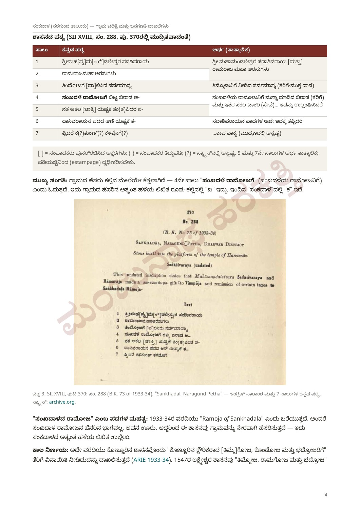
ಕಾಲನಿರ್ಣಯ: ಕೊಣ್ಣೂರಿನ ಕ್ಷೌರಿಕರಾದ [ತಿಮ್ಮ]ಓಜ, ಕೊಂಡೋಜ ಮತ್ತು ಭದ್ರೋಜರಿಗೆ ತೆರಿಗೆ ವಿನಾಯಿತಿ ನೀಡಿದ ಮತ್ತೊಂದು ಶಾಸನವನ್ನು ARIE ಉಲ್ಲೇಖಿಸುತ್ತದೆ. 1547ರ ಲಕ್ಷ್ಮೇಶ್ವರ ಶಾಸನ (SII XX 239) ತಿಮ್ಮೋಜ, ರಾಮಗೋಜ ಮತ್ತು ಭದ್ರೋಜ ಎಂಬ ಸಹೋದರರನ್ನು ಹೆಸರಿಸುತ್ತದೆ. ಇವುಗಳ ಹೋಲಿಕೆಯಿಂದ ಸುಮಾರು 1547–48 ಎಂಬ ದಿನಾಂಕವನ್ನು ವರದಿ ಊಹಿಸುತ್ತದೆ. ಇದು ದೃಢಪಟ್ಟ ದಿನಾಂಕವಲ್ಲ. ಸುಮಾರು 1543–1555ರಲ್ಲಿ ಅಳಿಯ ರಾಮರಾಯನು ಸದಾಶಿವರಾಯನ ಹೆಸರಿನಲ್ಲಿ ಹೊರಡಿಸಿದ ಕ್ಷೌರಿಕರ ಸವಲತ್ತುಗಳ ಸರಣಿಗೆ ಈ ದಾನ ಸೇರಿರಬಹುದು ಎಂಬುದು ವರದಿಯ ನಿರೂಪಣೆ.
ಸ್ಥಳೀಯರು ಸೂಚಿಸಿದ ಹನುಮಂತ ದೇವಾಲಯದ ಸ್ಥಳ: 15.793485° ಉತ್ತರ, 75.325527° ಪೂರ್ವ. ವರದಿಯ ನಕ್ಷೆಯಲ್ಲಿ ಇದು ಊರಿನ ವಾಯವ್ಯ ಭಾಗದ ದಟ್ಟ ವಸತಿ ಗುಂಪಿನಲ್ಲಿದೆ. ದಕ್ಷಿಣಕ್ಕೆ ಚಿಕ್ಕ ಕೆರೆ, ಪೂರ್ವಕ್ಕೆ ಮುಖ್ಯ ರಸ್ತೆಯ ಕೂಡುದಾರಿ, ನೈಋತ್ಯಕ್ಕೆ ದೊಡ್ಡ ಕೆರೆ ಮತ್ತು ಪೂರ್ವಕ್ಕೆ ಗುಡ್ಡವಿದೆ. ರಸ್ತೆ ಗುಡ್ಡವನ್ನು ಸುತ್ತಿ ಚಿಕ್ಕನರಗುಂದದ ಕಡೆ ಹೋಗುತ್ತದೆ; ಆಗ್ನೇಯಕ್ಕೆ ಗುಡ್ಡದ ಬುಡದುದ್ದಕ್ಕೂ ಮನೆಗಳಿವೆ.
ದೇವಾಲಯದ ಸುತ್ತಲಿನ ದಟ್ಟ ವಸತಿ ಮತ್ತು ಕೆರೆ ಹಳೆಯ ಊರಿನ ಕೇಂದ್ರವಾಗಿರಬಹುದು; ಗುಡ್ಡದ ಬುಡದ ವಸತಿ ನಂತರದ ವಿಸ್ತರಣೆಯಾಗಿರಬಹುದು ಎಂಬುದು ನಕ್ಷೆಯ ಆಧಾರದ ಊಹೆ ಮಾತ್ರ. ಹಿರಿಯರ ನೆನಪು ಅಥವಾ ಇತರ ಸಾಕ್ಷ್ಯದಿಂದ ದೃಢೀಕರಿಸಬೇಕು. ನಕ್ಷೆಯ ಮೂಲ: Esri World Imagery; ದೇವಾಲಯದ ಸ್ಥಳ: Apple Maps ಮತ್ತು ಸ್ಥಳೀಯ ಮಾಹಿತಿ.
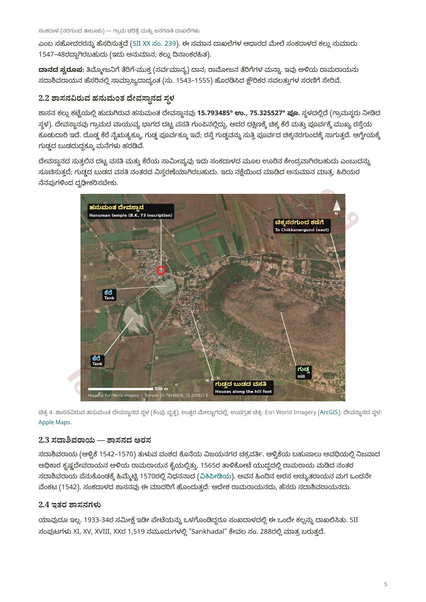
ವರದಿಯ ಹಿನ್ನೆಲೆ: ಸದಾಶಿವರಾಯ (1542–1570) ತುಳುವ ವಂಶದ ಕೊನೆಯ ವಿಜಯನಗರ ಚಕ್ರವರ್ತಿ; ಹೆಚ್ಚಿನ ಅವಧಿಯಲ್ಲಿ ನಿಜವಾದ ಅಧಿಕಾರ ಕೃಷ್ಣದೇವರಾಯನ ಅಳಿಯ ರಾಮರಾಯನ ಕೈಯಲ್ಲಿತ್ತು. ಅವನ ಹಿಂದಿನ ಅರಸ ಅಚ್ಯುತರಾಯನ ಮಗ ಒಂದನೇ ವೆಂಕಟ (1542). 1565ರ ತಾಳಿಕೋಟೆ ಯುದ್ಧದಲ್ಲಿ ರಾಮರಾಯ ಮಡಿದ ನಂತರ ಸದಾಶಿವರಾಯ ಪೆನುಕೊಂಡಕ್ಕೆ ಹಿಮ್ಮೆಟ್ಟಿ 1570ರಲ್ಲಿ ನಿಧನನಾದನೆಂದು ವರದಿ ಹೇಳುತ್ತದೆ (ವಿಕಿಪೀಡಿಯ ಆಧಾರ).
ವರದಿಯ ಪರಿಶೀಲನೆಯಲ್ಲಿ ಬೇರೆ ಸಂಕದಾಳ ಶಾಸನ ಸಿಗಲಿಲ್ಲ. 1933–34ರ ಸಮೀಕ್ಷೆಯು ಇಲ್ಲಿ ಒಂದೇ ಕಲ್ಲನ್ನು ದಾಖಲಿಸಿದೆ; ಪರಿಶೀಲಿಸಿದ SII XI, XV, XVIII, XXಯ 1,519 ನಮೂದುಗಳಲ್ಲಿ Sankhadal ಕೇವಲ ಸಂಖ್ಯೆ 288ರಲ್ಲಿ ಬರುತ್ತದೆ. ಇದು ಪರಿಶೀಲಿಸಿದ ಮೂಲಗಳ ವ್ಯಾಪ್ತಿಯ ಫಲಿತಾಂಶ; ಇನ್ನಾವ ಶಾಸನವೂ ಅಸ್ತಿತ್ವದಲ್ಲಿಲ್ಲ ಎಂಬ ಅಂತಿಮ ಸಾಬೀತಲ್ಲ.
ವರದಿ · ಪುಟ 6
| ಮೂಲ | ವರದಿಯ ವಿವರ |
|---|---|
| 1884 · Dharwad, Bombay Presidency XXII | ಯಾವ ಕಾಗುಣಿತದಲ್ಲೂ ಗ್ರಾಮದ ಉಲ್ಲೇಖ ಸಿಗಲಿಲ್ಲ. |
| 1959 · Dharwad, Bombay State | “Sankadhala; NR.” ನರಗುಂದದಿಂದ ವಾಯವ್ಯಕ್ಕೆ 9 ಮೈಲಿ ಪ್ರಯಾಣ ದೂರ; ವಿಸ್ತೀರ್ಣ 4.5 ಚದರ ಮೈಲಿ; ಜನಸಂಖ್ಯೆ 661; ಕುಟುಂಬಗಳು 127; ಕೃಷಿ ಅವಲಂಬಿತರು 651; ಅಂಚೆ ಕಚೇರಿ ನರಗುಂದ, 7 ಮೈಲಿ. |
1951ರಲ್ಲಿ ಸುಮಾರು 98.5% ಜನರು ಕೃಷಿಯನ್ನು ಅವಲಂಬಿಸಿದ್ದರು ಎಂದು 1959ರ ನಮೂದಿನಿಂದ ಲೆಕ್ಕಿಸಲಾಗಿದೆ. 1884ರಲ್ಲಿ ನಮೂದು ಇಲ್ಲದಿರುವುದರಿಂದ ಆಗ ಗಮನಾರ್ಹ ಸ್ಮಾರಕ ಅಥವಾ ವ್ಯಾಪಾರವಿಲ್ಲದ ಸಣ್ಣ ಗ್ರಾಮವಾಗಿರಬಹುದೆಂಬುದು ವರದಿಯ ಊಹೆ ಮಾತ್ರ.
1858ರ ಬಾಬಾಸಾಹೇಬರ ಬಂಡಾಯದ ನಂತರ ನರಗುಂದ ಸಂಸ್ಥಾನದ ಇತರ ಭೂಮಿಯೊಂದಿಗೆ ಸಂಕದಾಳವೂ ಬ್ರಿಟಿಷರ ಆಡಳಿತಕ್ಕೆ ಬಂದಿರಬಹುದು ಎಂದು ವರದಿ ಹೇಳುತ್ತದೆ. ಆದರೆ ಈ ಸಂದರ್ಭದಲ್ಲಿ ಗ್ರಾಮವನ್ನು ನೇರವಾಗಿ ಹೆಸರಿಸುವ ಮೂಲ ಸಿಕ್ಕಿಲ್ಲ.
ವರದಿ · ಪುಟ 6–9
1872–1941ರ ಗ್ರಾಮಮಟ್ಟದ ಜನಗಣತಿ ಕೋಷ್ಟಕಗಳು ವರದಿಯ ಹುಡುಕಾಟದಲ್ಲಿ ಆನ್ಲೈನ್ನಲ್ಲಿ ಲಭ್ಯವಾಗಲಿಲ್ಲ. 1991ರ ಧಾರವಾಡ ಕೈಪಿಡಿಯೂ ಜನಗಣತಿಯ ಡಿಜಿಟಲ್ ಗ್ರಂಥಾಲಯದಲ್ಲಿ ಸಿಗಲಿಲ್ಲ. ಖಾಲಿ ಅಂಕಿಗಳನ್ನು ಶೂನ್ಯ ಎಂದು ಪರಿಗಣಿಸಬಾರದು. ಇಲ್ಲಿ ನೀಡಿರುವ ಅಂಕಿಗಳು ಐತಿಹಾಸಿಕ; ಇಂದಿನ ಜನಸಂಖ್ಯೆಯ ಅಂದಾಜಲ್ಲ.
| ವರ್ಷ | ಕುಟುಂಬಗಳು | ಜನಸಂಖ್ಯೆ | ಪುರುಷರು | ಮಹಿಳೆಯರು | ಲಿಂಗಾನುಪಾತ | ಬೆಳವಣಿಗೆ | ಮೂಲ |
|---|---|---|---|---|---|---|---|
| 1951 | 127 | 661 | 314 | 347 | 1,105 | — | DCHB 1951 |
| 1961 | 133 | 811 | 385 | 426 | 1,106 | 22.7% | DCHB 1961 |
| 1971 | 160 | 974 | 462 | 512 | 1,108 | 20.1% | DCHB 1971 |
| 1981 | 206 | 1,220 | 602 | 618 | 1,027 | 25.3% | DCHB 1981 |
| 1991 | — | — | — | — | — | ಲಭ್ಯವಿಲ್ಲ | — |
| 2001 | 305 | 1,664 | 880 | 784 | 891 | 36.4% (20 ವರ್ಷ) | VD 2001 |
| 2011 | 337 | 1,831 | 942 | 889 | 944 | 10.0% | PCA 2011 |
ಲಿಂಗಾನುಪಾತ ಎಂದರೆ ಪ್ರತಿ 1,000 ಪುರುಷರಿಗೆ ಮಹಿಳೆಯರ ಸಂಖ್ಯೆ. 1951–81ರಲ್ಲಿ ಮಹಿಳೆಯರು ಹೆಚ್ಚು; 2001 ಮತ್ತು 2011ರಲ್ಲಿ ಪುರುಷರು ಹೆಚ್ಚು. 60 ವರ್ಷಗಳಲ್ಲಿ ಜನಸಂಖ್ಯೆ ಸುಮಾರು 2.77 ಪಟ್ಟು ಆಯಿತು. 2001ರ ಬೆಳವಣಿಗೆ 1981ರಿಂದ 20 ವರ್ಷದ ಬದಲಾವಣೆ; ಇತರ ದಶಕದ ದರಗಳೊಂದಿಗೆ ನೇರ ಹೋಲಿಕೆ ಬೇಡ.
| ವರ್ಷ | ಪರಿಶಿಷ್ಟ ಜಾತಿ: ಒಟ್ಟು (ಪು / ಮ) | ಪರಿಶಿಷ್ಟ ಪಂಗಡ: ಒಟ್ಟು (ಪು / ಮ) |
|---|---|---|
| 1961 | 49 (22 / 27) | ಇಲ್ಲ |
| 1971 | 67 (29 / 38) | ಇಲ್ಲ |
| 1981 | 108 (46 / 62) | 18 (11 / 7) |
| 2001 | 165 (77 / 88) | 91 (46 / 45) |
| 2011 | 199 (91 / 108) | 73 (34 / 39) |
| ವರ್ಷ | ಸಾಕ್ಷರರು: ಒಟ್ಟು (ಪು / ಮ) | ಒಟ್ಟು ಜನಸಂಖ್ಯೆಯ % | 7+ ವಯಸ್ಸಿನ ಸಾಕ್ಷರತಾ ದರ |
|---|---|---|---|
| 1951 | 115 (111 / 4) | 17.4% | — |
| 1961 | 168 (152 / 16) | 20.7% | — |
| 1971 | 253 (205 / 48) | 26.0% | — |
| 1981 | 313 (254 / 59) | 25.7% | — |
| 2001 | 846 (566 / 280) | 50.8% | 58.6% (ಪು 74.1%; ಮ 41.2%) |
| 2011 | 1,057 (652 / 405) | 57.7% | 68.5% (ಪು 82.2%; ಮ 54.0%) |
ಮಹಿಳಾ ಸಾಕ್ಷರರು 1951ರ 4ರಿಂದ 2011ರಲ್ಲಿ 405ಕ್ಕೆ ಏರಿದರು. 57.73% ಎಂಬುದು ಒಟ್ಟು ಜನಸಂಖ್ಯೆಯಲ್ಲಿನ ಸಾಕ್ಷರರ ಪಾಲು; 7 ವರ್ಷ ಮೇಲ್ಪಟ್ಟವರ ಸಾಕ್ಷರತಾ ದರ 68.5%. ವರದಿಯು ಕೆಲವು ತಾಣಗಳಲ್ಲಿ “ಮಹಿಳಾ ಸಾಕ್ಷರತೆ 22.1%” ಎಂದು ಓದಿರುವುದನ್ನು ತಪ್ಪೆಂದು ಗುರುತಿಸುತ್ತದೆ; ಆ ಸಂಖ್ಯೆಯನ್ನು ಮಹಿಳೆಯರ 7+ ಸಾಕ್ಷರತಾ ದರವಾಗಿ ಬಳಸಬಾರದು.
| ವರ್ಷ | ಸಾಗುವಳಿದಾರರು (ಪು / ಮ) | ಕೃಷಿ ಕೂಲಿಕಾರರು (ಪು / ಮ) | ಗೃಹ ಕೈಗಾರಿಕೆ | ಇತರ | ಅಲ್ಪಾವಧಿ | ಕೆಲಸಗಾರರಲ್ಲದವರು |
|---|---|---|---|---|---|---|
| 1951: ಜೀವನೋಪಾಯ ವರ್ಗಗಳು | 530 (ಅವಲಂಬಿತರ ಸೇರಿ) | 117 (ಅವಲಂಬಿತರ ಸೇರಿ) | — | 8 + 6 ಭೂಮಾಲೀಕರು | — | — |
| 1961 | 139 (135 / 4) | 209 (76 / 133) | 28 | 20 | — | 415 |
| 1971 | 179 (178 / 1) | 174 (68 / 106) | 9 | 12 | — | 600 |
| 1981 | 291 (182 / 109) | 171 (85 / 86) | 10 | 52 | 150 | 546 |
| 2001 | 477 (290 / 187) | 240 (107 / 133) | 13 | 61 | 21 | 852 |
| 2011 | 403 (322 / 81) | 102 (50 / 52) | 5 | 297 (40 / 257) | 286 | 738 |
ಒಟ್ಟು ಕೆಲಸಗಾರರು: 1961ರಲ್ಲಿ 396; 1971ರಲ್ಲಿ 374; 1981ರಲ್ಲಿ 674; 2001ರಲ್ಲಿ 812; 2011ರಲ್ಲಿ 1,093. 1951ರ ವರ್ಗಗಳಲ್ಲಿ ಕೆಲಸಗಾರರ ಜೊತೆಗೆ ಅವಲಂಬಿತರೂ ಸೇರಿರುವುದರಿಂದ ನಂತರದ ಅಂಕಿಗಳೊಂದಿಗೆ ನೇರ ಹೋಲಿಕೆ ಸಾಧ್ಯವಿಲ್ಲ. ವರದಿ ಕೈಪಿಡಿಗಳ ಸ್ವಂತ ಮೊತ್ತಗಳೊಂದಿಗೆ ಅಂಕಿಗಳನ್ನು ಪರಿಶೀಲಿಸಿದೆ ಎಂದು ಹೇಳುತ್ತದೆ.
1961ರಲ್ಲಿ ಕೃಷಿ ಕೂಲಿಕಾರರು ಹೆಚ್ಚು; 1981–2011ರಲ್ಲಿ ಸಾಗುವಳಿದಾರರು ಹೆಚ್ಚು. 2011ರಲ್ಲಿ 257 ಮಹಿಳೆಯರು “ಇತರ ಕೆಲಸಗಾರರು” ಎಂದು ದಾಖಲಾಗಿರುವುದು ಸ್ಥಳೀಯ ಉದ್ಯಮ ಅಥವಾ ವರ್ಗೀಕರಣದ ಬದಲಾವಣೆಯನ್ನು ಸೂಚಿಸಬಹುದು ಎಂಬುದು ವರದಿಯ ವ್ಯಾಖ್ಯಾನ; ನಿರ್ದಿಷ್ಟ ಕಾರಣ ದೃಢಪಟ್ಟಿಲ್ಲ.
| ವರ್ಷ | ನೀರಾವರಿ | ಮಳೆಯಾಶ್ರಿತ | ಸಾಗುವಳಿಗೆ ಲಭ್ಯವಿಲ್ಲ | ಸಾಗುವಳಿ ಯೋಗ್ಯ ಪಾಳು |
|---|---|---|---|---|
| 1971 | ಇಲ್ಲ | 2,714 ಎಕರೆ | 143 ಎಕರೆ | — |
| 1981 | 350.07 ಹೆ. (ಸರ್ಕಾರಿ ಕಾಲುವೆ) | 748.20 ha | 57.77 ha | — |
| 2001 | 384.10 ಹೆ. (ಸರ್ಕಾರಿ ಕಾಲುವೆ) | 725.12 ha | 42.19 ha | 4.59 ha |
ವರದಿಯ ನಕ್ಷೆಯಲ್ಲಿ 1971ರ 2,714 ಎಕರೆಯನ್ನು ಸುಮಾರು 1,098 ಹೆಕ್ಟೇರ್ಗೆ ಪರಿವರ್ತಿಸಲಾಗಿದೆ. ನೀರಾವರಿ ಪಾಲು 1971ರಲ್ಲಿ 0%, 1981ರಲ್ಲಿ ಸುಮಾರು 32%, 2001ರಲ್ಲಿ ಸುಮಾರು 35% (ನೀರಾವರಿ + ಮಳೆಯಾಶ್ರಿತ ಭೂಮಿಯ ಆಧಾರ).
1979–80ರ ವೇಳೆಗೆ ಸುಮಾರು ಮೂರನೇ ಒಂದು ಭಾಗ ಭೂಮಿಗೆ ಕಾಲುವೆ ನೀರು ಲಭ್ಯವಿತ್ತು. 1972ರಲ್ಲಿ ಆರಂಭವಾದ ನವಿಲುತೀರ್ಥದ ಮಲಪ್ರಭಾ ಅಣೆಕಟ್ಟಿನ ನರಗುಂದ ಶಾಖಾ ಕಾಲುವೆಯ ಪರಿಣಾಮವಿರಬಹುದು ಎಂಬುದು ವರದಿಯ ಊಹೆ; ಪರಿಶೀಲಿಸಿದ ಗ್ರಾಮದ ದಾಖಲೆಗಳು ಕಾಲುವೆಯನ್ನು ಹೆಸರಿಸುವುದಿಲ್ಲ.
ವರದಿ · ಪುಟ 10
| ವರ್ಷ / ಮೂಲ | ಸೌಲಭ್ಯಗಳು |
|---|---|
| 1961 · DCHB | ಪ್ರಾಥಮಿಕ ಶಾಲೆ; ಕೆರೆಯಿಂದ ಕುಡಿಯುವ ನೀರು. |
| 1971 · DCHB | ಪ್ರಾಥಮಿಕ ಶಾಲೆ; ಕೆರೆ ನೀರು; ಕಚ್ಚಾ ರಸ್ತೆ; ಪ್ರಮುಖ ಆಹಾರ ಜೋಳ ಮತ್ತು ಗೋಧಿ; ನರಗುಂದ 11 ಕಿ.ಮೀ. |
| 1981 · DCHB | ಪ್ರಾಥಮಿಕ ಶಾಲೆ; ಕೆರೆ ನೀರು; ವೈದ್ಯಕೀಯ ಸೌಲಭ್ಯ, ಅಂಚೆ ಕಚೇರಿ, ಮಾರುಕಟ್ಟೆ ಮತ್ತು ಬಸ್ 5 ಕಿ.ಮೀ. ಒಳಗೆ; ಎಲ್ಲ ಉದ್ದೇಶಗಳಿಗೆ ವಿದ್ಯುತ್; ಕಚ್ಚಾ ರಸ್ತೆ; ನರಗುಂದ 15 ಕಿ.ಮೀ. 1979–80ರಲ್ಲಿ 3 ದಿನಪತ್ರಿಕೆ ಪ್ರತಿಗಳು ಮತ್ತು 1 ಟ್ರ್ಯಾಕ್ಟರ್. |
| 2001 · VD | 2 ಪ್ರಾಥಮಿಕ ಶಾಲೆಗಳು ಮತ್ತು 1 ಮಾಧ್ಯಮಿಕ ಶಾಲೆ; ಸಮುದಾಯ ಆರೋಗ್ಯ ಕಾರ್ಯಕರ್ತ; ಕೆರೆ ಮತ್ತು ಕೈಪಂಪು ನೀರು; 3 ದೂರವಾಣಿ ಸಂಪರ್ಕ; ಬಸ್ ಸೇವೆ; ಊರಿನಲ್ಲಿ ಸಹಕಾರಿ ಬ್ಯಾಂಕ್, 5 ಕಿ.ಮೀ. ಒಳಗೆ ವಾಣಿಜ್ಯ ಬ್ಯಾಂಕ್; ಎಲ್ಲ ಉದ್ದೇಶಗಳಿಗೆ ವಿದ್ಯುತ್; ಪಕ್ಕಾ ರಸ್ತೆ. ದಾಖಲಾದ ವಾರ್ಷಿಕ ಗ್ರಾಮ ಆದಾಯ ₹1,24,162; ವೆಚ್ಚ ₹1,36,511. |
| 2011 · villageinfo.in | ಬಸ್ ಸೇವೆ ಮತ್ತು ಆರೋಗ್ಯ ಉಪಕೇಂದ್ರ; ಪ್ರಾಥಮಿಕ ಆರೋಗ್ಯ ಕೇಂದ್ರ ಮತ್ತು ಅಂಚೆ ಕಚೇರಿ 2–5 ಕಿ.ಮೀ.; ಬ್ಯಾಂಕ್ 10 ಕಿ.ಮೀ.ಗಿಂತ ಹೆಚ್ಚು ದೂರ; ಸಮೀಪದಲ್ಲಿ ರೈಲು ಸೌಲಭ್ಯವಿಲ್ಲ. |
ವರದಿ · ಪುಟ 11
ಹನುಮಂತ ದೇವಾಲಯ: 16ನೇ ಶತಮಾನದ ಎಂದು ಅಂದಾಜಿಸಲಾದ ಶಾಸನವು ದೇವಾಲಯದ ಕಟ್ಟೆಯಲ್ಲಿದೆ (ARIE 1933–34).
ಶಿವಾನಂದ ಮಠ: ಭಕ್ತ ಸಮುದಾಯವನ್ನೇ ತನ್ನ ಸಂಪತ್ತೆಂದು ಭಾವಿಸುವ ಸಣ್ಣ ಮಠವೆಂದು ವರದಿ ಪರಿಚಯಿಸುತ್ತದೆ. ವಾರ್ಷಿಕ ಜಾತ್ರಾ ಮಹೋತ್ಸವವು ಬ್ರಹ್ಮಲೀನ ಚನ್ನಬಸಯ್ಯ ಶ್ರೀಗಳ ಪುಣ್ಯಾರಾಧನೆಯೊಂದಿಗೆ ನಡೆಯುತ್ತದೆ. ಮೇ 2025ರಲ್ಲಿ 73ನೇ ಪುಣ್ಯಾರಾಧನೆ ನಡೆದಿತ್ತೆಂದು ಕನ್ನಡಪ್ರಭ ವರದಿಯನ್ನು ಉಲ್ಲೇಖಿಸುತ್ತದೆ. ಇದರಿಂದ ಸುಮಾರು 1952ರಲ್ಲಿ ಶ್ರೀಗಳು ಲಿಂಗೈಕ್ಯರಾಗಿರಬಹುದು ಎಂಬ ಲೆಕ್ಕಾಚಾರ ಮಾಡಲಾಗಿದೆ; ಅದು ಸ್ವತಂತ್ರವಾಗಿ ದೃಢಪಟ್ಟ ದಿನಾಂಕವಲ್ಲ.
ಚನ್ನಬಸವ ಮಹಾಸ್ವಾಮಿಗಳ ಜನ್ಮಸ್ಥಳವಾದ ರೋಣ ತಾಲೂಕಿನ ವೈ.ಎಸ್. ಹಡಗಲಿಯಿಂದ ಸೂರಕೋಡ, ನರಗುಂದ, ಚಿಕ್ಕನರಗುಂದ ಮತ್ತು ಬೆನಕನಕೊಪ್ಪದ ಮೂಲಕ ಸಂಕದಾಳಕ್ಕೆ ಗ್ರಂಥ ಮೆರವಣಿಗೆ ಮತ್ತು ಜ್ಯೋತಿ ಯಾತ್ರೆ ಬರುತ್ತದೆ. ಗದಗದ ಶಿವಾನಂದ ಮಠದ ಜಗದ್ಗುರು ಸದಾಶಿವಾನಂದ ಶ್ರೀಗಳು ನೇತೃತ್ವ ವಹಿಸುತ್ತಾರೆ ಎಂದು ವರದಿ ಹೇಳುತ್ತದೆ (ಕನ್ನಡಪ್ರಭ).
ವೀರಶೈವ ಸಮುದಾಯ: ಅಖಿಲ ಭಾರತ ವೀರಶೈವ ಮಹಾಸಭಾದ ನರಗುಂದ ತಾಲೂಕು ಪಟ್ಟಿಯಲ್ಲಿ ಗ್ರಾಮವಿದೆ. 2025ರ ಹೆಸರು ಕಾಳು ಖರೀದಿ ಕೇಂದ್ರ: NAFED ಮತ್ತು NCCF ಅಡಿಯಲ್ಲಿ ನರಗುಂದ ತಾಲೂಕಿನ ಒಂಬತ್ತು ಕೇಂದ್ರಗಳಲ್ಲಿ ಸಂಕದಾಳವೂ ಒಂದೆಂದು ವರದಿ ಹೇಳುತ್ತದೆ. 2026ರ ನೀರಿನ ಅಭಾವ: ಕುಡಿಯುವ ನೀರಿನ ಅಭಾವದ ಅಪಾಯವಿರುವ ಗ್ರಾಮದ ಪಟ್ಟಿಯಲ್ಲಿ ಸಂಕದಾಳವಿದೆ ಎಂದು ಕನ್ನಡಪ್ರಭ ಆಧರಿಸಿ ದಾಖಲಿಸಿದೆ. ಇವು ವರದಿಯಲ್ಲಿರುವ ದಿನಾಂಕಿತ ಉಲ್ಲೇಖಗಳು; ಇಂದಿನ ಸೇವೆ ಅಥವಾ ಪರಿಸ್ಥಿತಿಯನ್ನು ಇಲ್ಲಿ ಹೊಸದಾಗಿ ಪರಿಶೀಲಿಸಿಲ್ಲ.
ವರದಿ · ಪುಟ 11–12
| ವರ್ಷ | ಘಟನೆ |
|---|---|
| ಸು.1547–48 | ಸದಾಶಿವರಾಯ–ರಾಮರಾಜ ಶಾಸನದ ಅಂದಾಜು ಕಾಲ; ತಿಮ್ಮೋಜನಿಗೆ ಸರ್ವಮಾನ್ಯ, ರಾಮೋಜನಿಗೆ ತೆರಿಗೆ ವಿನಾಯಿತಿ. |
| 1565 | ತಾಳಿಕೋಟೆ ಯುದ್ಧ; ವಿಜಯನಗರದ ಕುಸಿತದ ಹಿನ್ನೆಲೆ. |
| 1858 | ನರಗುಂದದ ಬಾಬಾಸಾಹೇಬರ ಬಂಡಾಯ; ಸಂಸ್ಥಾನ ಬ್ರಿಟಿಷರ ವಶ. ಗ್ರಾಮದ ನೇರ ಉಲ್ಲೇಖ ಸಿಕ್ಕಿಲ್ಲ. |
| 1884 | ಧಾರವಾಡ ಗೆಜೆಟಿಯರ್ನಲ್ಲಿ ಗ್ರಾಮದ ಉಲ್ಲೇಖ ಸಿಗಲಿಲ್ಲ. |
| 1933–34 | ASI ಹನುಮಂತ ದೇವಾಲಯದ ಶಾಸನ ದಾಖಲಿಸಿತು (B.K. 73). |
| 1951 | ಜನಸಂಖ್ಯೆ 661; ಸುಮಾರು 98.5% ಕೃಷಿ ಅವಲಂಬಿತರು. |
| ಸು.1952 | ಚನ್ನಬಸಯ್ಯ ಶ್ರೀಗಳ ಬ್ರಹ್ಮಲೀನದ ಅಂದಾಜು; 2025ರ 73ನೇ ಪುಣ್ಯಾರಾಧನೆಯಿಂದ ಲೆಕ್ಕ. |
| 1956 | ಮೈಸೂರು (ಈಗಿನ ಕರ್ನಾಟಕ) ರಾಜ್ಯಕ್ಕೆ ಸೇರ್ಪಡೆ. |
| 1971–81 | ನೀರಾವರಿ ಇಲ್ಲದ ಸ್ಥಿತಿಯಿಂದ ಸುಮಾರು 350 ಹೆಕ್ಟೇರ್ ಕಾಲುವೆ ನೀರಾವರಿಗೆ. |
| 1997 | ಗದಗ ಜಿಲ್ಲೆ ರಚನೆ; ಸಂಕದಾಳ ಗದಗ ಜಿಲ್ಲೆಗೆ. |
| 2011 | ಜನಸಂಖ್ಯೆ 1,831; 7+ ಸಾಕ್ಷರತೆ 68.5%. |
| 2025 | ಶಿವಾನಂದ ಮಠದ ಜಾತ್ರೆ, 73ನೇ ಪುಣ್ಯಾರಾಧನೆ; ಹೆಸರು ಕಾಳು ಖರೀದಿ ಕೇಂದ್ರ. |
| 2026 | ಕುಡಿಯುವ ನೀರಿನ ಅಭಾವದ ಅಪಾಯದ ಪಟ್ಟಿಯಲ್ಲಿ ಗ್ರಾಮ. |
ವರದಿ · ಪುಟ 12
| ಮಾಹಿತಿಯ ಕೊರತೆ | ವರದಿಯ ಹುಡುಕಾಟ ಸಲಹೆ |
|---|---|
| B.K. 73ರ ಪಡಿಯಚ್ಚು; 5 ಮತ್ತು 7ನೇ ಸಾಲುಗಳು | ASI ಶಾಸನಶಾಸ್ತ್ರ ಶಾಖೆ, ಪುರಾತತ್ವ ಭವನ, ಹೆಬ್ಬಾಳ 2ನೇ ಹಂತ, ಮೈಸೂರು 570017; ವರದಿಯ ದೂರವಾಣಿ 0821-2304211. |
| 1991ರ ಜನಗಣತಿ | ಧಾರವಾಡ DCHB ಭಾಗ XII-A/Bಯ ಮುದ್ರಿತ ಪ್ರತಿ; ಜನಗಣತಿ ನಿರ್ದೇಶನಾಲಯದ ಗ್ರಂಥಾಲಯಗಳು. |
| 1872–1941ರ ಜನಗಣತಿಗಳು | ಬಾಂಬೆ ಪ್ರೆಸಿಡೆನ್ಸಿ ಗ್ರಾಮ ಪಟ್ಟಿಗಳು; ಮಹಾರಾಷ್ಟ್ರ ಮತ್ತು ಕರ್ನಾಟಕ ರಾಜ್ಯ ಪತ್ರಾಗಾರಗಳು. |
| ಇನಾಂ, ಜೋಡಿ ಮತ್ತು ಕಂದಾಯ ಸರ್ವೇ ಸೆಟಲ್ಮೆಂಟ್ | ನವಲಗುಂದ–ನರಗುಂದ ಬಾಂಬೆ ರೆವೆನ್ಯೂ ಸರ್ವೇ ಸೆಟಲ್ಮೆಂಟ್ ವರದಿಗಳು; ಧಾರವಾಡ ವಿಭಾಗೀಯ ಪತ್ರಾಗಾರದ ಇನಾಂ ಆಯೋಗದ ದಾಖಲೆಗಳು. |
| ಶಿವಾನಂದ ಮಠ ಮತ್ತು ಚನ್ನಬಸಯ್ಯ ಶ್ರೀಗಳ ಇತಿಹಾಸ | ಮಠದ ಸ್ಮರಣ ಸಂಚಿಕೆಗಳು ಮತ್ತು ಗದಗದ ಶಿವಾನಂದ ಮಠ. |
| ಇತರ ಶಾಸನ ಅಥವಾ ಪುರಾತನ ಅವಶೇಷ | ಕನ್ನಡ ವಿಶ್ವವಿದ್ಯಾಲಯ, ಹಂಪಿಯ ಗದಗ ಜಿಲ್ಲಾ ಶಾಸನ ಸಂಪುಟ; ವರದಿಯಲ್ಲಿ ಅಂತಿಮ ಹಂತದಲ್ಲಿದೆ ಎಂದು ಹೇಳಲಾಗಿದೆ. |
ಚಿತ್ರಗಳ ಬಗ್ಗೆ: ಊರಿನ ಕಾಲಘಟ್ಟದ ದೃಶ್ಯಗಳು AI ಕಲಾತ್ಮಕ ಪುನರ್ರಚನೆಗಳು; ನೈಜ ಅಥವಾ ಐತಿಹಾಸಿಕ ಛಾಯಾಚಿತ್ರಗಳಲ್ಲ. SII ಮುದ್ರಿತ ಪುಟದ ಪ್ರತಿಚಿತ್ರ ಮತ್ತು Esri ಉಪಗ್ರಹ ನಕ್ಷೆ ಪ್ರತ್ಯೇಕ ಮೂಲಚಿತ್ರಗಳು. ಜನಗಣತಿ ನಕ್ಷೆಗಳು ಕೋಷ್ಟಕಗಳ ಅಂಕಿಗಳನ್ನು ಚಿತ್ರಿಸುತ್ತವೆ. ಮೂಲ ವರದಿಯ ಎಲ್ಲಾ ಪುಟಗಳನ್ನು ಕೆಳಗೆ ಉಳಿಸಲಾಗಿದೆ.
ವರದಿ · ಪುಟ 12–13
ಕೆಳಗಿನ ಕೊಂಡಿಗಳು ಮೂಲ ವರದಿಯಿಂದ ಉಳಿಸಿಕೊಂಡ ಉಲ್ಲೇಖಗಳು. ಈಗಿನ ಪುಟಗಳ ವಿಷಯ ಅಥವಾ ಲಭ್ಯತೆಯನ್ನು ಹೊಸದಾಗಿ ಪರಿಶೀಲಿಸಿಲ್ಲ. ಮೂಲ ಹೆಸರುಗಳನ್ನು ಗುರುತಿಸಲು ಅವುಗಳ ಪ್ರಕಟಿತ ಶೀರ್ಷಿಕೆಗಳನ್ನು ಬಳಸಲಾಗಿದೆ.
ವರದಿ · ಪುಟ 1–13
ಎಲ್ಲಾ 13 ಪುಟಗಳು, ಚಿತ್ರಗಳು, ಐದು ಜನಗಣತಿ ನಕ್ಷೆಗಳು, ಕೋಷ್ಟಕಗಳು ಮತ್ತು ಮೂಲ ಲಿಪ್ಯಂತರವನ್ನು ಯಥಾವತ್ತಾಗಿ ಇಲ್ಲಿ ನೋಡಬಹುದು. ಇವು ಕನ್ನಡ ಮೂಲಪುಟಗಳು; ಇಂಗ್ಲಿಷ್ ಓದುವ ಆವೃತ್ತಿ ಮೇಲಿನ ವಿಭಾಗಗಳಲ್ಲಿದೆ.
ಮೂಲ ಕನ್ನಡ PDF ಡೌನ್ಲೋಡ್ ↓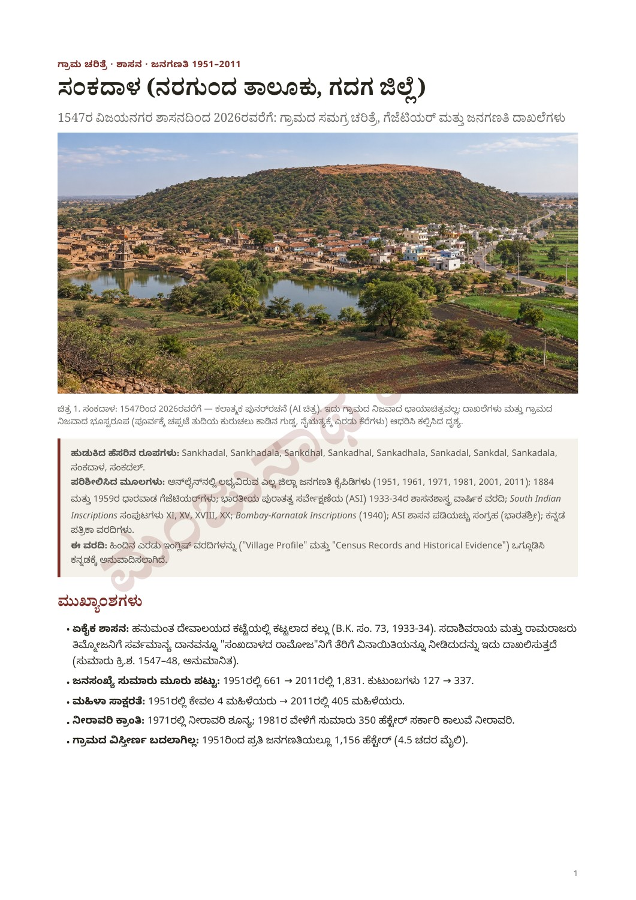
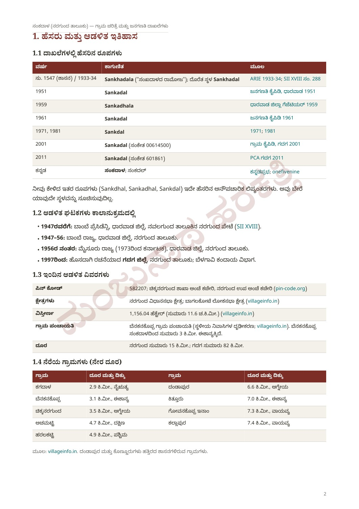
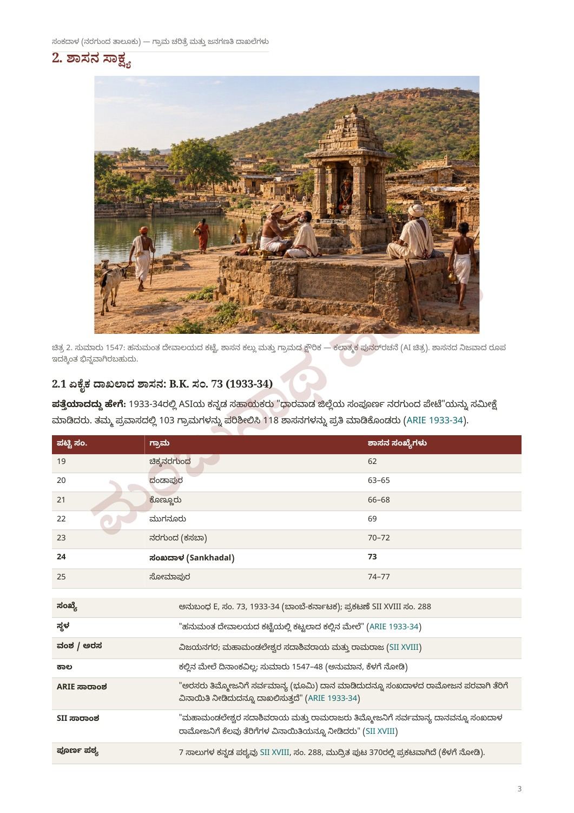
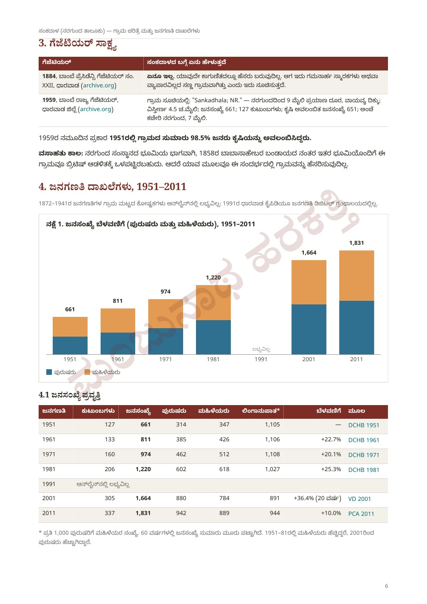
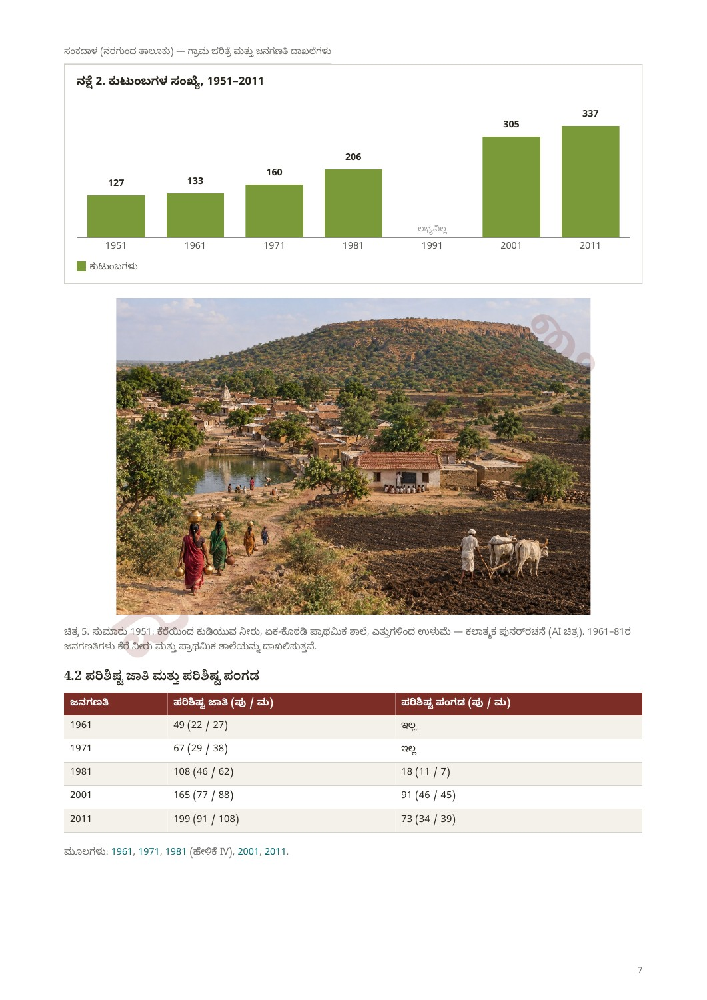
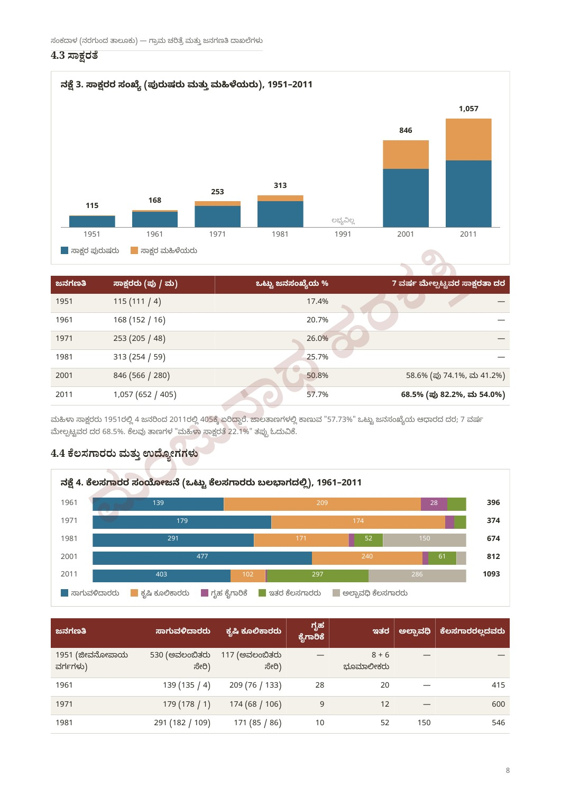
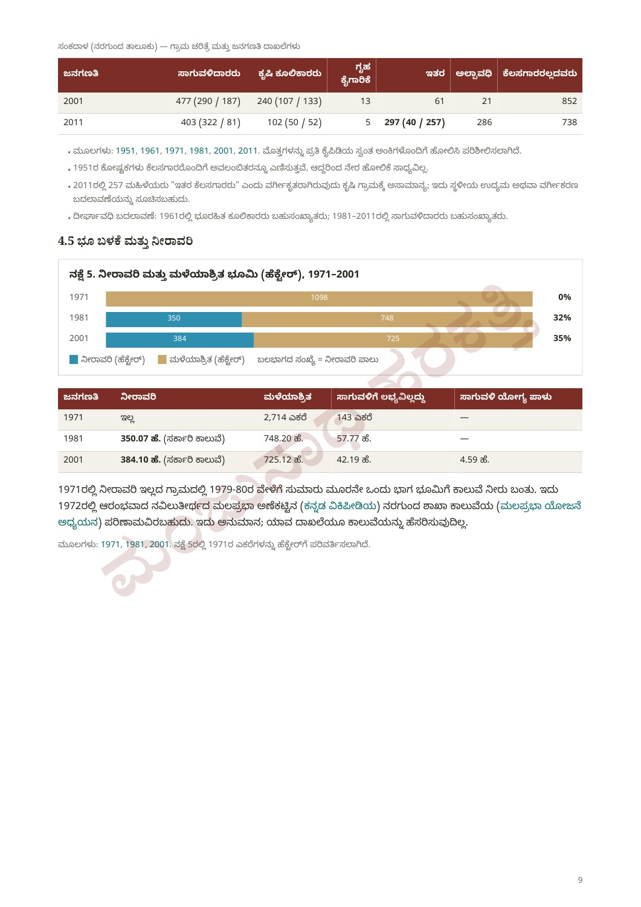
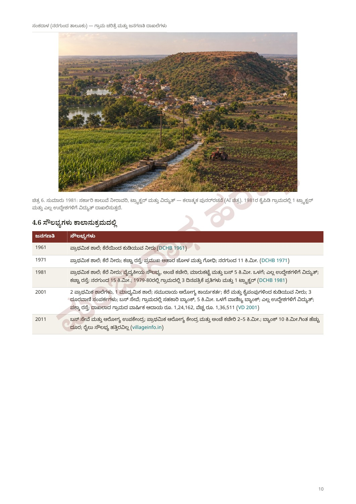
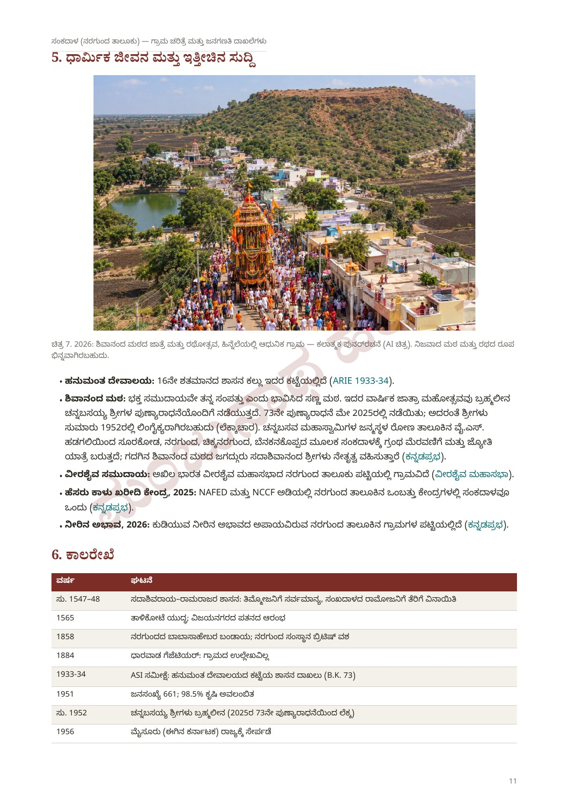
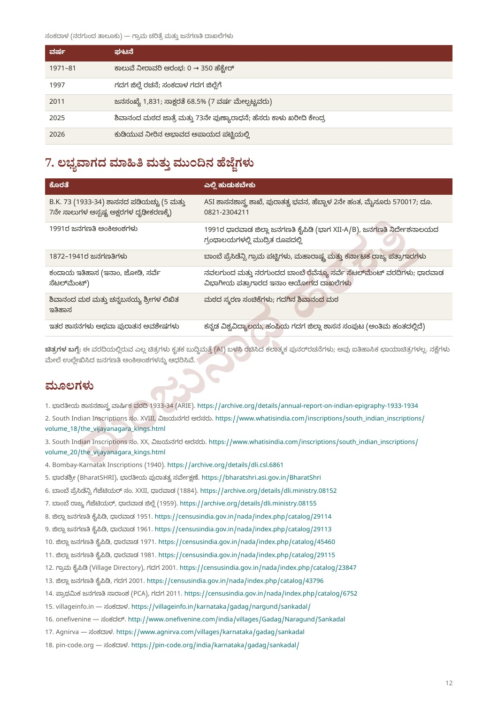
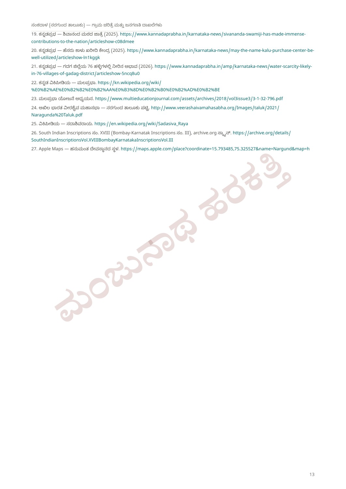
Report · page 1
History from an approximately dated Vijayanagara inscription to 2026, gazetteer evidence, and census records from 1951–2011. This web edition organizes the details of the shared Kannada report by subject. This website has not independently verified the underlying records.
The report combines two earlier English reports, “Village Profile” and “Census Records and Historical Evidence,” translated into Kannada. Its research covered the 1951, 1961, 1971, 1981, 2001 and 2011 census handbooks; Dharwad gazetteers of 1884 and 1959; ARIE 1933–34; SII XI, XV, XVIII and XX; Bombay-Karnatak Inscriptions (1940); ASI’s BharatSHRI estampage collection; and Kannada newspaper reports.
Highlights: population rose from 661 to 1,831; households from 127 to 337; and literate women from 4 to 405 (1951–2011). No irrigation was recorded in 1971; approximately 350 hectares had government-canal irrigation in 1981. The report describes the village area as remaining approximately 1,156 hectares.
Report · page 2
Name variants searched: Sankhadal, Sankhadala, Sankdhal, Sankadhal, Sankadhala, Sankadal, Sankdal, Sankadala, ಸಂಕದಾಳ and ಸಂಕದಲ್. The report treats these as spelling or transliteration variants of the same village, rather than separate places.
| Year | Name / code | Source |
|---|---|---|
| c.1547 / recorded 1933–34 | Sankhadala; Sankhadal | ARIE 1933–34; SII XVIII 288 |
| 1951 | Sankadal | DCHB 1951 |
| 1959 | Sankadhala | Dharwad Gazetteer |
| 1961 | Sankadal | DCHB 1961 |
| 1971; 1981 | Sankdal | DCHB 1971; 1981 |
| 2001 | Sankadal · 00614500 | VD Gadag 2001 |
| 2011 | Sankadal · 601861 | PCA Gadag 2011 |
| Kannada | ಸಂಕದಾಳ; ಸಂಕದಲ್ | Kannadaprabha; onefivenine |
| Period | Administration |
|---|---|
| Before 1947 | Bombay Presidency, Dharwad district, Naragund Petha of Navalgund taluk (SII XVIII). |
| 1947–56 | Bombay State, Dharwad district, Naragund taluk. |
| From 1956 | Mysore State (Karnataka from 1973), Dharwad district, Naragund taluk. |
| From 1997 | Newly formed Gadag district; Naragund taluk; Belagavi revenue division. |
| Detail | Information in the report |
|---|---|
| PIN code | 582207; Chikkanargund branch post office, Nargund sub post office. |
| Constituencies | Nargund Assembly; Bagalkot Lok Sabha. |
| Area | 1,156.04 hectares; approximately 11.6 km². |
| Gram panchayat | Benakanakoppa, approximately 3 km northeast of Sankadal (local confirmation and villageinfo.in in the report). |
| Distances | Nargund approximately 15 km; Gadag approximately 82 km. |
| Neighbouring village | Straight-line distance | Direction |
|---|---|---|
| Kagadal | 2.9 km | Southwest |
| Benakanakoppa | 3.1 km | Northeast |
| Chikkanargund | 3.5 km | Southeast |
| Achamatti | 4.7 km | South |
| Haralakatti | 4.9 km | West |
| Dandapur | 6.6 km | Southeast |
| Kittur | 7.0 km | Northeast |
| Govankoppa Inam | 7.3 km | Northwest |
| Kallapur | 7.4 km | Northwest |
The report identifies Dandapur and Konnur as nearby villages with inscriptions.
Report · page 3–5
In 1933–34, ASI’s Kannada assistants surveyed the entire Naragund Petha of Dharwad district. According to the report, they examined 103 villages and copied 118 inscriptions.
| List number | Village | Inscription numbers |
|---|---|---|
| 19 | Chikkanargund | 62 |
| 20 | Dandapur | 63–65 |
| 21 | Konnur | 66–68 |
| 22 | Muganur | 69 |
| 23 | Naragund (Kasba) | 70–72 |
| 24 | Sankhadal | 73 |
| 25 | Somapur | 74–77 |
Identifier: ARIE 1933–34, Appendix E, B.K. number 73; published as SII XVIII, number 288, printed page 370. Location: a stone built into the Hanuman temple platform. Rulers: Vijayanagara’s Mahamandalesvara Sadasivaraya and Ramaraja. The stone has no date.
The ARIE and SII summaries describe a sarvamanya gift to Timmoja and remission of certain taxes for Ramoja of Sankhadala. The report explains “Ramoja of Sankhadala” as identifying his village, rather than part of his personal name. Line 4, “ಸಂಖದಳೆ ರಾಮೋಜಗೆ,” directly names the village. The earlier form uses ಖ, compared with ಕ in the modern name.
To avoid silently altering the old Kannada transcription, an exact facsimile of report page 4 is retained below. Square brackets mark editorial reconstruction, parentheses editorial correction, and (?) an uncertain reading. Lines 5 and 7 require confirmation from an estampage.
| Lines | Provisional meaning |
|---|---|
| 1–2 | Sri Mahamandalesvara Sadasivaraya and the great ruler Ramaraja. |
| 3 | A sarvamanya (tax-exempt gift) granted to Timmoja. |
| 4–5 | Remission of birada tax and other service obligations for Ramoja of Sankhadala; reading provisional. |
| 6 | An oath on Sadasivaraya’s feet, followed by a warning against violation… |
| 7 | An imprecatory clause; characters in the printed scan are unclear. |
Dating: ARIE mentions a Konnur inscription granting exemptions to barbers [Timm]oja, Kondoja and Bhadroja. A Lakshmeswar inscription dated 1547 (SII XX 239) names the brothers Timmoja, Ramagoja and Bhadroja. Comparison leads the report to propose approximately 1547–48. This is not a confirmed date. It places the gift in a series of privileges for barbers issued by Aliya Ramaraya in Sadasivaraya’s name around 1543–1555.
The locally supplied location of the Hanuman temple is 15.793485° N, 75.325527° E. The report’s map places it in a dense settlement in the village’s northwest, with a small tank south, a main-road junction east, a larger tank southwest and a hill east. The road skirts the hill toward Chikkanargund; houses extend along the hill’s southeastern foot.
The suggestion that the temple-and-tank area was the old village core, with later expansion along the hill, is a map-based hypothesis only. It needs confirmation through elders’ memories or other evidence. Map imagery is credited to Esri World Imagery; temple location to Apple Maps and local information.
Historical background in the report: Sadasivaraya (1542–1570) was the last Vijayanagara emperor of the Tuluva dynasty, while effective power for much of his reign lay with Krishnadevaraya’s son-in-law Ramaraya. His predecessor was Achyutaraya’s son Venkata I (1542). Citing Wikipedia, the report says that after Ramaraya’s death at Talikota in 1565, Sadasivaraya retreated to Penukonda and died in 1570.
No other Sankadal inscription was located in the report’s research. The 1933–34 survey recorded one stone here; among 1,519 entries examined in SII XI, XV, XVIII and XX, Sankhadal appears only at number 288. This describes the research coverage, rather than proving that no other inscription exists.
Report · page 6
| Source | Report findings |
|---|---|
| 1884 · Dharwad, Bombay Presidency XXII | No village entry was found under the searched spellings. |
| 1959 · Dharwad, Bombay State | “Sankadhala; NR.” Nine travel miles northwest of Nargund; area 4.5 square miles; population 661; households 127; agricultural dependants 651; post office Nargund, seven miles. |
The 1959 entry implies that approximately 98.5% of the 1951 population depended on agriculture. The report’s suggestion that the absent 1884 entry reflects a small village without notable monuments or trade is an inference only.
The report suggests that Sankadal may have passed to British administration with other Nargund estate lands after Babasaheb’s rebellion in 1858. It found no source directly naming the village in that context.
Report · page 6–9
Village-level census tables for 1872–1941 were not available online in the report’s search, and the 1991 Dharwad handbook was not found in the Census Digital Library. Missing figures must not be read as zero. These are historical figures, not current population estimates.
| Year | Households | Population | Male | Female | Sex ratio | Growth | Source |
|---|---|---|---|---|---|---|---|
| 1951 | 127 | 661 | 314 | 347 | 1,105 | — | DCHB 1951 |
| 1961 | 133 | 811 | 385 | 426 | 1,106 | 22.7% | DCHB 1961 |
| 1971 | 160 | 974 | 462 | 512 | 1,108 | 20.1% | DCHB 1971 |
| 1981 | 206 | 1,220 | 602 | 618 | 1,027 | 25.3% | DCHB 1981 |
| 1991 | — | — | — | — | — | Unavailable | — |
| 2001 | 305 | 1,664 | 880 | 784 | 891 | 36.4% (20 years) | VD 2001 |
| 2011 | 337 | 1,831 | 942 | 889 | 944 | 10.0% | PCA 2011 |
Sex ratio means women per 1,000 men. Women outnumbered men in 1951–81; men outnumbered women in 2001 and 2011. Population grew approximately 2.77-fold over 60 years. The 2001 growth figure spans 20 years from 1981 and is not directly comparable with decadal growth rates.
| Year | Scheduled Castes: total (M / F) | Scheduled Tribes: total (M / F) |
|---|---|---|
| 1961 | 49 (22 / 27) | None |
| 1971 | 67 (29 / 38) | None |
| 1981 | 108 (46 / 62) | 18 (11 / 7) |
| 2001 | 165 (77 / 88) | 91 (46 / 45) |
| 2011 | 199 (91 / 108) | 73 (34 / 39) |
| Year | Literate: total (M / F) | % of total population | Literacy rate, ages 7+ |
|---|---|---|---|
| 1951 | 115 (111 / 4) | 17.4% | — |
| 1961 | 168 (152 / 16) | 20.7% | — |
| 1971 | 253 (205 / 48) | 26.0% | — |
| 1981 | 313 (254 / 59) | 25.7% | — |
| 2001 | 846 (566 / 280) | 50.8% | 58.6% (M 74.1%; F 41.2%) |
| 2011 | 1,057 (652 / 405) | 57.7% | 68.5% (M 82.2%; F 54.0%) |
Literate women increased from four in 1951 to 405 in 2011. The figure 57.73% is the share of literates in the total population; literacy among ages seven and above is 68.5%. The report flags the “female literacy 22.1%” shown on some websites as a misreading; it should not be used as the female literacy rate for ages 7+.
| Year | Cultivators (M / F) | Agricultural labourers (M / F) | Household industry | Other | Marginal | Non-workers |
|---|---|---|---|---|---|---|
| 1951: livelihood classes | 530 (including dependants) | 117 (including dependants) | — | 8 + 6 landowners | — | — |
| 1961 | 139 (135 / 4) | 209 (76 / 133) | 28 | 20 | — | 415 |
| 1971 | 179 (178 / 1) | 174 (68 / 106) | 9 | 12 | — | 600 |
| 1981 | 291 (182 / 109) | 171 (85 / 86) | 10 | 52 | 150 | 546 |
| 2001 | 477 (290 / 187) | 240 (107 / 133) | 13 | 61 | 21 | 852 |
| 2011 | 403 (322 / 81) | 102 (50 / 52) | 5 | 297 (40 / 257) | 286 | 738 |
Total workers: 396 in 1961; 374 in 1971; 674 in 1981; 812 in 2001; 1,093 in 2011. The 1951 livelihood classes include dependants and are not directly comparable with later worker counts. The report says it checked sums against the handbooks’ own totals.
Agricultural labourers predominated in 1961, while cultivators predominated in 1981–2011. The report interprets the classification of 257 women as “other workers” in 2011 as possibly reflecting local industry or a classification change; no specific explanation is established.
| Year | Irrigated | Unirrigated | Unavailable for cultivation | Cultivable waste |
|---|---|---|---|---|
| 1971 | None | 2,714 acres | 143 acres | — |
| 1981 | 350.07 ha (government canal) | 748.20 ha | 57.77 ha | — |
| 2001 | 384.10 ha (government canal) | 725.12 ha | 42.19 ha | 4.59 ha |
The report’s chart converts 2,714 acres in 1971 to approximately 1,098 hectares. Irrigation shares are 0% in 1971, approximately 32% in 1981 and 35% in 2001, using irrigated plus unirrigated land as the denominator.
By 1979–80, roughly one-third of the cultivated land had canal water. The report suggests a connection with the Nargund branch canal of the Malaprabha dam at Naviluteertha, which it dates to 1972. This is an inference: the village records examined do not name the canal.
Report · page 10
| Year / source | Amenities |
|---|---|
| 1961 · DCHB | Primary school; drinking water from a tank. |
| 1971 · DCHB | Primary school; tank water; unpaved road; staple foods jowar and wheat; Nargund 11 km away. |
| 1981 · DCHB | Primary school; tank water; medical facility, post office, market and bus within 5 km; electricity for all purposes; unpaved road; Nargund 15 km away. Three newspaper copies and one tractor were recorded for 1979–80. |
| 2001 · VD | Two primary schools and one middle school; community health worker; tank and handpump drinking water; three telephone connections; bus service; cooperative bank in the village and commercial bank within 5 km; electricity for all purposes; surfaced road. Recorded annual village income ₹124,162; expenditure ₹136,511. |
| 2011 · villageinfo.in | Bus service and health subcentre; primary health centre and post office 2–5 km away; bank more than 10 km away; no nearby railway facility. |
Report · page 11
Hanuman temple: the inscription provisionally assigned to the 16th century is built into the temple platform (ARIE 1933–34).
Shivananda Math: the report describes a small math that regards its community of devotees as its wealth. Its annual jatra accompanies the punyaradhane of the late Channabasayya Swamiji. Citing Kannadaprabha, it records the 73rd observance in May 2025. The resulting estimate of approximately 1952 for his passing is a calculation, not an independently confirmed date.
A procession carrying a sacred text and flame travels from Y.S. Hadagali in Ron taluk, identified as Channabasava Mahaswamiji’s birthplace, through Surakod, Nargund, Chikkanargund and Benakanakoppa to Sankadal. The report, citing Kannadaprabha, names Jagadguru Sadashivananda Swamiji of Gadag’s Shivananda Math as its leader.
Veerashaiva community: the village appears in the All India Veerashaiva Mahasabha’s Naragund taluk list. Green gram procurement in 2025: the report identifies Sankadal as one of nine NAFED/NCCF procurement centres in the taluk. Water scarcity in 2026: citing Kannadaprabha, it lists Sankadal among villages at risk of drinking-water shortage. These are dated references from the report; current services and conditions have not been rechecked here.
Report · page 11–12
| Year | Event |
|---|---|
| c.1547–48 | Estimated date of the Sadasivaraya–Ramaraja inscription; sarvamanya to Timmoja and tax remission to Ramoja. |
| 1565 | Battle of Talikota; context for Vijayanagara’s decline. |
| 1858 | Babasaheb’s Nargund rebellion; estate taken by the British. No direct village reference located. |
| 1884 | No village entry found in the Dharwad gazetteer. |
| 1933–34 | ASI recorded the Hanuman temple inscription (B.K. 73). |
| 1951 | Population 661; approximately 98.5% agricultural dependence. |
| c.1952 | Estimated passing of Channabasayya Swamiji, calculated from the 73rd observance in 2025. |
| 1956 | Included in Mysore State, now Karnataka. |
| 1971–81 | Change from no recorded irrigation to approximately 350 ha of canal irrigation. |
| 1997 | Gadag district formed; Sankadal included in Gadag. |
| 2011 | Population 1,831; literacy ages 7+ at 68.5%. |
| 2025 | Shivananda Math jatra and 73rd punyaradhane; green gram procurement centre. |
| 2026 | Village listed as at risk of drinking-water shortage. |
Report · page 12
| Research gap | Where the report suggests looking |
|---|---|
| Estampage of B.K. 73; lines 5 and 7 | ASI Epigraphy Branch, Puratatva Bhavan, Hebbal 2nd Stage, Mysore 570017; telephone listed in report: 0821-2304211. |
| 1991 census | Printed Dharwad DCHB Parts XII-A/B in Directorate of Census libraries. |
| 1872–1941 censuses | Bombay Presidency village lists; Maharashtra and Karnataka state archives. |
| Inam, jodi and revenue survey settlements | Navalgund and Nargund Bombay Revenue Survey Settlement reports; Inam Commission records in the Dharwad divisional archives. |
| History of Shivananda Math and Channabasayya Swamiji | Commemorative publications and Shivananda Math, Gadag. |
| Other inscriptions or antiquities | Kannada University, Hampi’s Gadag district inscription volume, described as nearing completion in the report. |
About the visuals: period village scenes are AI artistic reconstructions, not real or historical photographs. The printed SII page scan and the Esri satellite map are separately sourced documentary images. Census charts visualize the tabulated figures. All original report pages are retained below.
Report · page 12–13
The following links preserve the references from the original report. Their present contents and availability have not been rechecked. Published titles are retained to help identify the sources.
Report · page 1–13
Browse all 13 original pages, including illustrations, five census charts, tables and the exact inscription transcription. These are the Kannada source pages; the English reading edition is in the sections above.
Download original Kannada PDF ↓